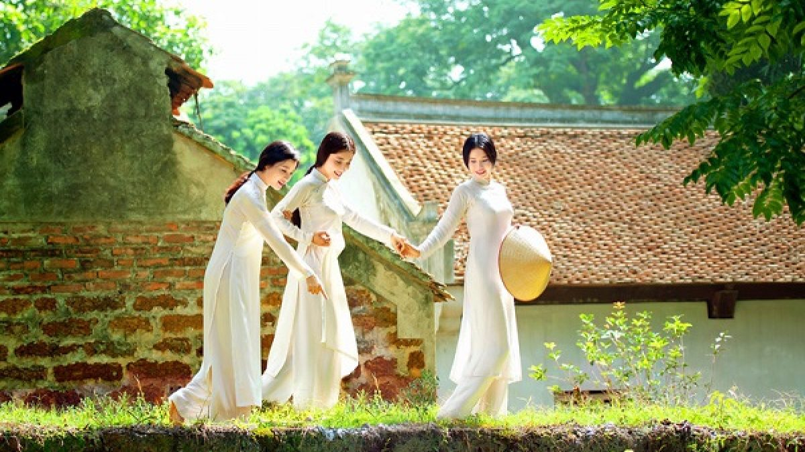
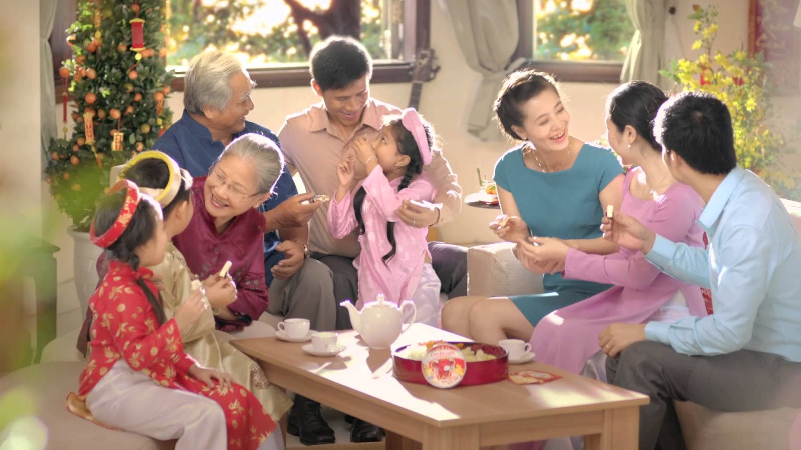

Vietnamese Culture
Traditional Clothing — Ao Dai
The ao dai is Vietnam’s national dress, symbolizing elegance and beauty. It is worn during festivals, weddings, and cultural events.

Festivals
Lunar new year is the most important in Vietnamese culture, welcoming the arrival of spring based on the lunar calendar. Vietnam celebrates many festivals, including Tet (Lunar New Year), Mid-Autumn Festival, and Hung Kings Festival.
Family Values
Family values in Vietnam are rooted in Confucian ethics and center on filial piety (deep respect and care for parents and elders), strict household hierarchy, and strong intergenerational support. Family is central to Vietnamese culture. Respect for elders and strong family bonds are deeply rooted traditions.
